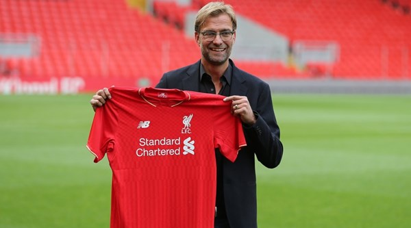
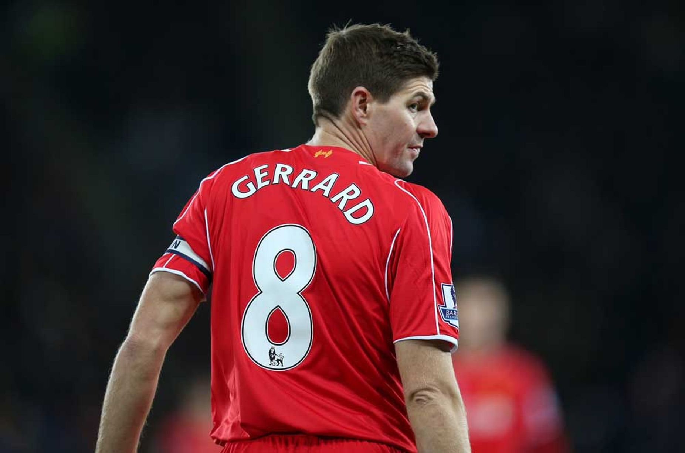
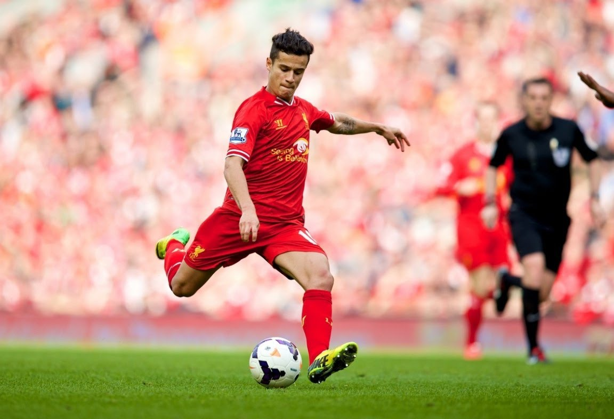

Jürgen Klopp

Jürgen Norbert Klopp (German pronunciation: [ˈjʏɐ̯ɡən ˈklɔp]; born 16 June 1967) is a German professional football manager and former player who is the current manager of Premier League club Liverpool.
Klopp spent his entire 12-year playing career at Mainz 05, before going on to become their longest-serving manager from 2001 to 2008, during which time they achieved promotion to the Bundesliga. In 2008, Klopp joined Borussia Dortmund, leading them to back-to-back Bundesliga wins in 2011 and 2012, as well as the DFB-Pokal in 2012, the DFL-Supercup in 2008, 2013 and 2014, and their second appearance in a Champions League final in 2013. Klopp won the German Football Manager of the Year in 2011 and 2012, before leaving Dortmund in 2015 having also become their longest-serving manager. He became manager of
Steven Gerrard

Steven George Gerrard, MBE (born 30 May 1980) is an English professional footballer who plays for Major League Soccer club LA Galaxy. He spent the majority of his career playing for Premier League club Liverpool, with most of that time as their captain. He has played much of his career as a central midfielder, but has also been used as a second striker, holding midfielder, attacking midfielder, right back and right winger
Philippe Coutinho

This name uses Portuguese naming customs. The first or maternal family name is Coutinho and the second or paternal family name is Correia.Philippe Coutinho Correia (Brazilian Portuguese: [fiˈlipi kowˈtʃĩj̃u]; born 12 June 1992), known as Philippe Coutinho, or simply Coutinho, is a Brazilian professional footballer who plays for English club Liverpool and the Brazil national team as an attacking midfielder or winger.
He began his club career at Vasco da Gama in Brazil before moving to Inter Milan in Italy, who loaned him to Spanish side Espanyol in 2012. In January 2013, he was signed by English Premier League club Liverpool for £8.5 million. His vision, passing, dribbling and long-range strikes have earned him the nickname Little Magician by Liverpool fans and teammates.[3] Brazilian great Pelé tipped Coutinho for a "great future",[4] after he was named in the 2015 PFA Team of the Year.[5]
At the age of 18, Coutinho made his senior international debut for Brazil in 2010. He represented the nation at the 2015 Copa América.